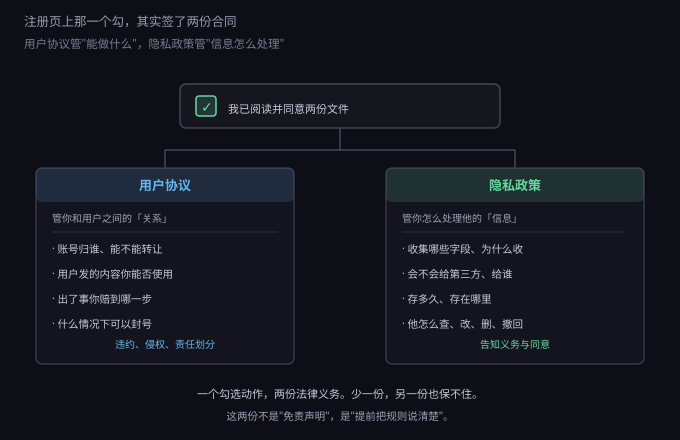
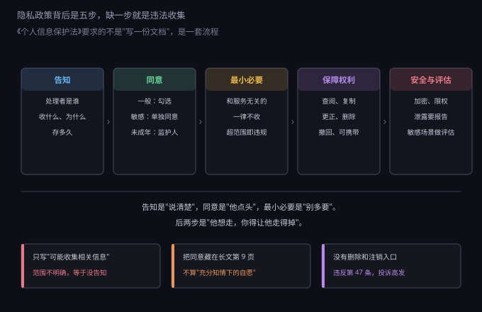
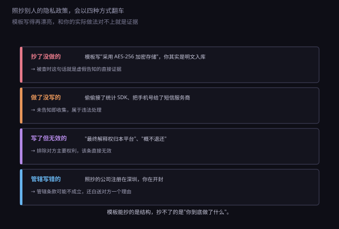

约 0.41 万字 · 3 张图 · 一个勾选动作背后的两份合同
先分清这两份东西管的是什么。很多人把它们当成"一回事"， 结果写出来的用户协议里塞了一堆隐私条款，隐私政策里又写了一堆责任限制。

用户协议管的是"你和用户之间的关系"：账号归谁、能做什么不能做什么、 你提供的东西出了问题时责任到哪一步、什么情况下你能封号。 它的本质是一份合同。
隐私政策管的是"你怎么处理他的个人信息"：收集哪些字段、 为什么收集、会不会给第三方、存多久、他怎么查怎么删。 它的本质不是合同，而是告知——法律要求你把这些说清楚， 然后取得他的同意。
这个区别有个很实际的后果：用户协议里的条款，你可以通过"合理提示"来约定对你不利的东西； 但隐私政策里写的每一句话，都是对事实的陈述。 你写了"采用加密存储"而实际是明文，那不叫"条款对我有利"， 那叫虚假告知，是违法的直接证据。
用户协议在法律上属于格式条款：你预先写好、重复使用、 用户没有协商余地的合同。法律对它的态度很明确——可以这么签， 但你不能借这个优势把责任全推光。
《民法典》第四百九十一条确认了这类电子合同的成立方式： 用户提交订单成功时合同成立。所以"点了同意"是真的有法律效力的， 不是走个形式。
但同时，第四百九十六条给了一个约束：提供格式条款的一方， 要采取合理的方式提示对方注意免除或减轻自己责任、与对方有重大利害关系的条款， 并按要求说明。如果没做到，导致对方没注意到、没理解， 对方可以主张该条款不成为合同内容。
这句话翻译成人话：你把一条对用户不利的条款藏在二十页文档的第八页， 字号和正文一样小，用户点了同意也可能不算数。 反过来，如果你把它加粗、单独弹窗确认，它就更可能站得住。
所以用户协议里真正该认真写的，是下面这几块。它们决定了出问题时你有没有依据。
账号规则：账号归谁（归平台，用户只有使用权）、 能不能转让、长期不登录怎么处理、能不能注销。 这几条看起来琐碎，但涉及虚拟财产纠纷时全靠它们。
用户内容的授权：用户发的内容，版权仍然是用户的， 但你需要一条许可，才能展示、存储、备份、做缩略图、推荐给其他人。 这条许可要写清范围（是否可用于宣传）、期限（账号存续期间还是永久）、 以及能不能转授权。写得含糊，将来想做产品宣传时就没依据。
行为规则与处置：哪些内容不允许发、违规了怎么处理（删除、限流、封号、移交司法机关）、 用户能不能申诉。这一块既是管理依据，也是你在被投诉"无故封号"时的抗辩材料。
责任限制：写明服务"按现状提供"、不保证不中断、 对间接损失不负责、赔偿上限是多少。但这条有天花板， 下一节单独说。
终止与争议解决：什么情况下你能单方终止、终止后数据保留多久、 争议由哪个法院管。管辖这一条要特别注意：《民事诉讼法》允许协议选择管辖法院， 但只能在与争议有实际联系的地点里选——被告住所地、合同履行地、 合同签订地、原告住所地、标的物所在地。随便写一个远在天边的法院，条款可能不成立。
还有一个容易被忽略的：单方修改权。 几乎所有协议都写着"本协议可能随时更新，继续使用视为同意"。 这条不是完全无效，但法院通常要求你做到两件事： 变更内容要合理通知（站内信、邮件、显著位置公告）， 并且给用户退出的机会（不同意可以注销并取回数据）。 如果只是悄悄改一版然后说"继续使用视为同意"，遇到较真的用户很难守住。
这一小节可以当成一张"别浪费时间"清单。下面这些话，写进协议也不产生效力。
"最终解释权归本平台所有"。 这句话在消费类场景里是明令禁止的。《消费者权益保护法》第二十六条不允许经营者 以格式条款作出排除或限制消费者权利、减轻或免除自己责任、加重消费者责任的规定。 合同解释权本来就是法院的权力，你自己声明一句拿不走。
"一经售出概不退款"、"虚拟商品不退不换"。 一刀切地排除退款权，同样属于排除对方主要权利。 合理写法是按情形区分：未使用的可以退、已交付的不退、 有质量问题的依法处理。
"因使用本服务造成的任何损失，本平台概不负责"。 《民法典》第五百零六条写得很直接：造成对方人身损害的免责条款无效； 因故意或者重大过失造成对方财产损失的免责条款也无效。 所以"概不负责"这四个字做不到它想做的事。能约定的是"间接损失不赔、 赔偿总额不超过你支付的费用"这种有范围的责任限制。
"用户须自行承担一切法律责任"。 用户违法，平台该配合调查还是要配合，该承担的连带或补充责任也跑不掉。 这条只在你向用户追偿时有点意义，不能用来对抗第三方。
"支付后合同不成立"。 《电子商务法》第四十九条专门堵了这个：经营者不得以格式条款约定 消费者支付价款后合同不成立。写了也无效。
隐私政策最常见的误解，是把它当成一份"保护自己"的文件。 它的真实定位正好相反：它是向用户交代的文件。 法律要求你交代，你交代得清楚，才叫履行了告知义务。
这套要求来自《个人信息保护法》。它的结构可以拆成五步，缺一步都算违规收集。

第一步，告知。第十七条列了必须说清的几项： 处理者的名称和联系方式、处理目的、处理方式、信息种类、保存期限， 以及用户行使权利的方式和程序。注意"保存期限"这一项—— 很多政策写"我们会在必要期限内保存"，这不叫期限，叫没说。
第二步，同意。第十三条列了处理个人信息的合法性基础， 同意只是其中一种（还有"订立履行合同所必需""履行法定职责义务"等）。 这一条很重要：不是所有处理都必须拿同意，属于"提供服务所必需"的， 用户不同意也可以不提供这项服务，但你仍然要告知。
同意分三层，很多人只做了第一层：
向境外提供个人信息也要单独同意（第三十九条）， 用别人的 SDK 把数据传到境外服务器，同样算。
第三步，最小必要。《网络安全法》第四十一条和个保法都要求： 收集个人信息应当限于实现处理目的的最小范围， 不得收集与提供服务无关的信息。 一个记事本应用要读取通讯录，这条就过不去——不是因为没告知， 而是因为不需要。
第四步，保障权利。用户有权查阅、复制、更正、删除自己的信息， 有权撤回同意，有权要求把数据转移到别的平台（可携带）。 对应到产品上就是四个功能：导出、修改、删除、注销。 这四个入口做不出来，政策写得再好也是空话。
这里有个常被拿来当挡箭牌的说法："不同意就不给用"。 第十六条明确禁止这种做法，只有一个例外—— 处理该信息确实是提供这项服务所必需的。 一个纯本地记事本要求必须同意"个性化广告推送"才让用，就属于违法。
第五步，安全与评估。要采取加密、权限控制、访问日志等措施； 发生泄露要立即采取补救并报告； 处理敏感信息、做自动化决策、委托处理、对外提供、跨境传输之前， 还要做个人信息保护影响评估并留存记录至少三年。
最后是罚则，值得知道一下量级：情节严重的， 可处五千万元以下或者上一年度营业额百分之五以下罚款， 还可以责令暂停相关业务、吊销许可。 对个人开发者来说，更现实的风险不是这个数字，而是应用下架和被投诉后的整改成本。
说到这里，"找个模板改改"这件事的问题就很清楚了： 模板里的每一句都是别人家的事实陈述， 而你的实际情况跟他不一定一样。

第一种，抄了没做的。模板写"采用 AES-256 加密存储"， 你的数据库其实是明文。这句话平时没人管，一旦被检查或被投诉， 它就成了"你明知应当加密却没有做"的直接证据。写得多反而更糟。
第二种，做了没写的。这是最常见也最危险的一类： 接了一个统计 SDK、把手机号给了短信服务商、用了第三方客服系统， 政策里一个字没提。未告知即收集，属于违法处理， 而且这类问题在应用商店审核和监管抽检里很容易被发现。
第三种，写了但无效的。"最终解释权""概不退还"这类话， 抄进来不但没用，还会被认为你存在"利用格式条款侵害用户权益"的意图。
第四种，管辖写错的。模板里的公司注册在深圳， 你的主体在开封，管辖条款写着"由深圳市南山区人民法院管辖"。 这条要么不成立，要么在真打起来时给你自己添麻烦。
如果你是一个人做产品，不需要写成法务级别的东西，但下面这几件事必须做到。
一、每个收集点都能对上一条。 把产品里所有会拿到个人信息的地方列出来：注册（手机号、邮箱）、 头像上传（照片）、支付（订单信息）、日志（IP、设备型号）、 第三方 SDK（统计、推送、崩溃收集）。每一条都要能在隐私政策里找到对应说明。 找不到的，要么补说明，要么去掉这个收集。
二、写清"四件事"。 每一项收集都回答：收什么、为什么收、给不给第三方、存多久。 这四件事写清楚了，第十七条的基本要求就满足了。
三、把"四个入口"做出来。 导出、修改、删除、注销。哪怕实现得很朴素—— 一个"申请注销"按钮，后台人工处理——也比没有强。 注销入口缺失是投诉高发点，也是最容易被要求整改的一项。
四、别把同意藏在页脚。 注册页的那个勾选框，旁边要有两份文件的可点击链接。 只放在网站页脚的小字里，很难被认为履行了"显著提示"义务。 敏感信息（人脸、位置、通讯录）要单独一个弹窗，不能合并进总同意。
五、变更要通知。 政策改了，至少在站内公告或邮件通知一次，并写明"不同意可以注销"。 悄悄改版本是很多纠纷的起点。
还有一条实操建议：模板可以用，但要逐条核对。 拿一份同行业、同规模产品的政策当骨架，然后做两件事—— 删掉你没做的事，补上你做了但没写的事。 这两步做完，模板才变成你的。
抽象讲完了，用上一节那个"云记"走一遍，看看具体长什么样。
它实际会碰到的个人信息大概五类：注册用的手机号或邮箱、 用户写的笔记内容（可能包含他人信息）、上传的图片附件、 设备与日志信息（IP、系统版本、崩溃记录）、支付订单信息（如果卖会员）。
对应的隐私政策要写清：手机号用于注册和登录、用于找回账号， 不会用于营销；笔记内容仅存储、不同步给任何第三方， 除非用户主动分享；图片附件存在对象存储里，服务商是谁； 日志保留 30 天用于故障排查；订单信息按《电子商务法》要求保存三年； 接入了哪几家的统计和崩溃收集 SDK，各自收集什么。
再对照最小必要，砍掉一样东西：这个应用不需要通讯录、 不需要位置、不需要相册全量权限（只要用户主动选图）。 砍掉这三项，政策就短了一截，风险也少了一截。
功能上补四个入口：导出全部笔记（一个 zip）、修改手机号、 删除单条笔记、注销账号（注销后 15 天内清除数据，法律要求留存的订单除外）。
这样一份政策，大概两三千字就够，比抄来的八千字模板短得多， 但每一句都能对上产品里真实存在的动作。这才是它该有的样子。